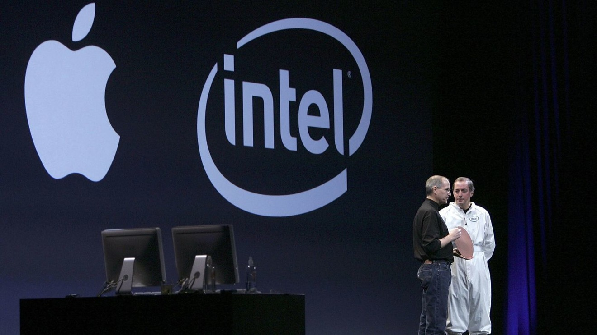

The Mac platform has had four major transitions in its lifetime so far: the switch from the Motorola 68000 to PowerPC processors, the switch from Mac OS 9 to Mac OS X (macOS), the switch from PowerPC to Intel processors, and the last being where we are now: the switch from Intel to Apple Silicon processors.

January 10, 2006: Intel CEO Paul Otellini delivers the first Intel Silicon Wafer to Apple CEO Steve Jobs
Most software has transitioned extremely well, and MonoGame was almost one of them. MonoGame can use the ARM version of the .NET SDK to compile and run games, but the MonoGame Content Builder Editor uses a binary only present in the x64 version of the .NET SDK at this time. Our solution is to install the x64 version of the .NET SDK and use Rosetta 2 emulation to run it.
If you run into any issues running MonoGame on an Apple Silicon machine please contact barlas.3@osu.edu or put a message up on Piazza (preferred).
Ensure that .NET is not previously installed on your system by typing the following command in the macOS Terminal:
dotnet --infowhich should result in the following response:
If an ARM version of dotnet is already installed you should make a backup of your system before moving forward. Nothing we are doing is particularly dangerous, but if you have other apps that use the .NET runtime I am not 100% sure how much they love getting the ARM version trashed in favor of a x64 version.
Download the x64 version of .NET 6 for macOS by going to Microsoft's website.

Run the .NET installer. The system may ask to install Rosetta, please accept this prompt. If you do not see this prompt that means you previously installed Rosetta on your machine. Once the install is complete you may move the installer disk image to the trash.

If your Terminal app is still open, please restart it. You will now find that if you try to reinvoke the
dotnet --info
command, the dotnet executable is still not found by the system. This is because we need to create a symbolic link between where the x64 version of .NET installed and where macOS is looking for executables.
Open Finder, and from the Menu Bar select Go > Go to Folder to see if the /usr/local/bin directory exists. If it does not, please run these two commands:
cd ~
sudo mkdir /usr/local/binNow we can create a symbolic link to the x64 binary:
cd ~
sudo ln -s /usr/local/share/dotnet/x64/dotnet /usr/local/binRestart the Terminal again, and now invoke
dotnet --infoto verify the installation of the x64 version of .NET was successful.

Please download Visual Studio for Mac 2022 by going to Microsoft's website and hitting the download button at the top of the page. Once the download is complete, please run the installer.
When the What would you like to install? page appears, make sure to deselect the .NET option. This will install the ARM version of the .NET SDK which does not have the binaries needed for the Monogame Content Builder. You may now click install. When the installer asks if you would like to install Xcode Command Line Tools, you can choose either option.

Download the MonoGame extension for Mac from MonoGame's GitHub page.

Launch Visual Studio and open the extension menu by going to the Menu Bar and choosing Visual Studio > Extensions
Click the Install from file... button in the bottom right and select the .mpack file you just downloaded. Ignore the warning that talks about MonoDevelop.Core. Close the extension menu, do not restart Visual Studio, and click on the new project button. You should be able to see a MonoGame section in the project creation window. Create a project and click run, and the standard MonoGame window should appear.

There will be times when you want to create a new project and the MonoGame section in the new project wizard is absent. When this happens, go to Visual Studio > Extensions to uninstall and reinstall the same .mpack file we just installed. Now, the section should appear when creating a new project. You do not need to do this every time you open Visual Studio, only when you want to create a new project.

With a new project made and ready to go, it is now time to build the project. Click the play button found in the upper left corner of Visual Studio to start compiling the project. This may take some time. Once completed, the project should launch automatically while your Visual Studio opens some debug windows.

Using the project navigator on the left of the Visual Studio window, go to Content directory of your MonoGame project. There should be a Content.mcgb file that handles the content pipeline for your project. Right click this file and select Open With > MCGB Editor and the MonoGame Content Builder Editor should now launch.
You will notice that the top bar of buttons shown in RB Whitaker's tutorial is not present, but they are hidden in the Menu Bar. To add content, from the Menu Bar select Edit > Add > Existing Item.... To build content, from the Menu Bar select Build > Build. When you eventually try to build content by launching the MCGB from Visual Studio, you will find that a build error occurs:

Please quit the MCGB Editor. The simple fix is that every time you want to build content you need to launch the MCGB Editor from the macOS Terminal. To do this, navigate to your MonoGame project's Content directory in the Terminal (using cd command) and execute:
open Content.mcgband now the build process should succeed.